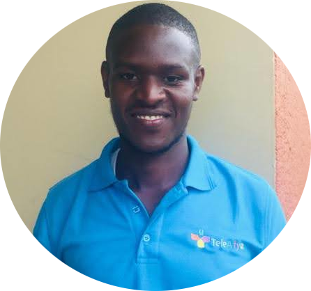

|  |
Naamara HanningtonFounder and CTO of Edoctorug Company Limited Director, Softprog Uganda Limited Business Development Manager, Computer-Wise (U) Limited Coding Mentor at RonHan Coding Academy Limited I am a software developer, data scientist, web developer, IT Consultant as well as a Business Manager. I love swimming, making friends and travelling. I am good at solving problems with the latest computational algorithms and data structures. I run a coding academy where I am the chief Operations. I have worked closely with Kipya Connect Business Solutions as a business lead, Christ Embassy International as a web developer, Edoctorug Limited as a CEO, Kyambogo University as a network Specialist, Explorer Dubai Limited as a computer Engineer, Helium Cloud as a Digital Marketing Specialist, Xtreme Motors as a systems Engineer, RESI Africa as a web developer, Scogep Uganda Limited as an IT Consultant. And many more ....... link to: My contact Information |
| Period | Organisation | Responsibilities held |
|---|---|---|
| 2014-2015 | Internship Training at APICT Center, Kyambogo University. |
|
| 2015 | Internship Training at Kyambogo University. |
|
| 2015-2016 | Graduate Interniship Training at Uganda Manufacturers Association. |
|
| 2016-2017 | Business Manager at Kipya Connect Business Solutions. |
|
| 2017 | City Secondary School, Nansana |
|
| 2017-2018 | Digital Marketer at Minute meals Restaurant and Psalms Musical School, Fortportal. |
|
| 2018-2019 | Web developer at Christ Embassy International. |
|
| 2019-2021 | Digital Marketer and IT Assstant at Helium Cloud, Uganda. |
|
| 2020-2021 | Business Development Manager at Computer-Wise (U) Limited. |
|
| Skill: | Experience: |
|---|---|
| Web Development | 🌟🌟🌟🌟 |
| Database Management | 🌟🌟🌟 |
| Digital Marketing | 🌟🌟🌟🌟 |
| Wordpress web design | 🌟🌟🌟🌟🌟 |
| Computer Networking | 🌟🌟 |
| Graphics Design | 🌟🌟 |
| Computer repair and mantenance | 🌟🌟🌟🌟 |
| Django, Python Sofware development | 🌟🌟🌟 |
| Solar installation and mantenance | 🌟🌟🌟 |
| LANGUAGE | SPEAKING | READING | WRITING |
|---|---|---|---|
| English | Fluent | Excellent | Excellent |
| Rukiga-Runyankole | Fluent | Excellent | Excellent |
| Luganda | Fair | Fair | Good |
| Name | Position | Telephone Number | Email Address |
|---|---|---|---|
| Mr. Ssenyondwa Allan | Internship Placement Officer, Uganda Manufacturers Association - HEST | 0704358654 | allansse@yahoo.com |
| Mr. Taremwa Danison | Lecturer, Kyambogo University | 0782925914 | P. O. Box 1, Kampala Uganda |
| Mr. Musinguzi Allan | Instructor, APICT Center, Kyambogo University | 0776581332 | musinguziallan@gmail.com |